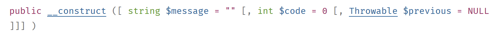

7. الاستثناءات والأخطاء
عندما تواجه طريقة فئة خطأً لا يمكن إصلاحه (الملف غير موجود، قاعدة البيانات غير متصلة، انقطاع الاتصال بالشبكة)، فإنها لا تعرض خطأً على وحدة التحكم (ملف، قاعدة بيانات) بل ترمي استثناءً. جميع الاستثناءات تمتد من فئة [\Exception]. بالإضافة إلى الاستثناءات، تولد العمليات الداخلية لـ PHP أيضًا أخطاءً فئتها الأساسية هي فئة [\Error]. كلتا الفئتين تنفذان واجهة PHP [\Throwable].
7.1. هيكل دليل البرامج النصية

7.2. واجهة [\Throwable]
واجهة [\Throwable] هي كما يلي:

دور أساليب الواجهة هو كما يلي:

7.3. الاستثناءات المحددة مسبقًا في PHP 7
يحدد PHP 7 عدة فئات استثناءات:

- في [1]، الاستثناءات المحددة مسبقًا في PHP؛
- في [2]، الاستثناءات من SPL (مكتبة PHP القياسية) في PHP 7. SPL هي مجموعة من الفئات والواجهات المصممة لحل المشكلات التي يواجهها المطورون بشكل متكرر.
7.4. الأخطاء المحددة مسبقًا في PHP 7
يحدد PHP 7 عدة فئات للأخطاء:

فئة [\Error] هي الفئة الأم لجميع الأخطاء المحددة مسبقًا في PHP. تسمح لك فئة [ErrorException] بتغليف مثيل من فئة [\Error] داخل مثيل من فئة [\Exception]. وهذا يسمح بمعالجة الأخطاء بشكل موحد من خلال التعامل مع الاستثناءات فقط.
7.5. مثال 1
يوضح المثال الأول [exceptions-01.php] كلاً من أخطاء PHP والاستثناءات:
<?php
// display all errors
ini_set("error_reporting", E_ALL);
ini_set("display_errors", "on");
// code --------
$var=[];
// unknown key
print $var["abcd"];
// division by zero
$var=7/0;
var_dump($var);
// fixed terminal board
$array = new \SplFixedArray(5);
$array[1] = 2;
$array[4] = "foo";
// index outside the limits
$array[5]=8;
تعليقات
- السطر 4: نطلب من PHP الإبلاغ عن جميع الأخطاء. المعلمة الثانية هي مستوى الخطأ المطلوب:


- السطر 5: نطلب عرض الأخطاء على وحدة التحكم؛
- السطر 9: نصل إلى عنصر غير موجود في المصفوفة [$var]؛
- السطر 11: نقوم بعملية قسمة على صفر؛
- السطر 14: نقوم بإنشاء مثيل لفئة [SplFixedArray]. تسمح لنا هذه الفئة بإنشاء مصفوفة ذات حدود ثابتة وفهارس صحيحة؛
- السطر 18: نصل إلى عنصر غير موجود في المصفوفة؛
النتائج
تعليقات
- السطر 1 من النتائج: يؤدي الوصول إلى مفتاح صفيف غير موجود إلى حدوث خطأ PHP من المستوى [E_NOTICE]. لا يؤدي هذا إلى مقاطعة تنفيذ البرنامج النصي؛
- السطر 3 من النتائج: يؤدي قسمة عدد على صفر إلى حدوث خطأ PHP من المستوى [E_WARNING]. وهذا لا يوقف تنفيذ البرنامج النصي؛
- الأسطر 6-9 من النتائج: يؤدي الوصول إلى فهرس غير موجود في مصفوفة [SplFixedArray] إلى حدوث [RuntimeException] ويؤدي إلى مقاطعة تنفيذ البرنامج النصي؛
7.6. معالجة الاستثناءات
يوضح البرنامج النصي [exceptions-02.php] كيفية معالجة الاستثناءات:
<?php
// all errors are displayed
ini_set("error_reporting", E_ALL);
ini_set("display_errors", "on");
// surround the code with a try / catch
try {
$var = [];
// unknown key
print $var["abcd"];
// division by zero
$var = 7 / 0;
var_dump($var);
// fixed terminal board
$array = new \SplFixedArray(5);
$array[1] = 2;
$array[4] = "foo";
// index outside the limits
$array[5] = 8;
// check
print "ce message ne sera pas affiché\n";
} catch (\Throwable $ex) {
// \Throwable is the interface implemented by most errors and exceptions
// exception is displayed
print "erreur, message : " . $ex->getMessage() . ", type : " . get_class($ex) . "\n";
}
تعليقات
- هذا البرنامج النصي هو نفسه الذي تم عرضه في الفقرة السابقة. ومع ذلك، فقد قمنا الآن بتغليف الكود الموجود في الأسطر 8–19 — والذي قد يتسبب في حدوث أخطاء — في كتلة try/catch: إذا تسبب الكود الموجود في الأسطر 8–21 في حدوث (إلقاء) استثناء أو خطأ، فسيتم معالجته بواسطة جملة catch الموجودة في الأسطر 22–26؛
- السطر 22: معلمة جملة [catch] هي نوع الاستثناء أو الخطأ المراد معالجته. من خلال تحديد النوع على أنه [\Throwable] —وهو واجهة— نشير إلى أننا نريد معالجة أي مثيل فئة ينفذ واجهة [\Throwable]. وبما أن جميع فئات الأخطاء والاستثناءات تنفذ هذه الواجهة، فإن جملة [catch] هنا تعالج أي خطأ أو استثناء مغلف في فئة؛
- السطر 19: العبارة التي تثير الخطأ وتثير الاستثناء. بمجرد حدوث استثناء، يتدفق التحكم إلى جملة [catch]. وبالتالي، لن يتم تنفيذ الكود الذي يلي السطر 19؛
النتائج
تعليقات على النتائج
- السطران 1 و 3: نرى أخطاء من المستوى [E_NOTICE] و [E_WARNING]. هذه الأخطاء ليست استثناءات وبالتالي لا يتم التعامل معها بواسطة جملة [catch]؛
- السطر 5: لدينا رسالة الخطأ المكتوبة في جملة [catch]. وبالتالي فقد حدث استثناء مشتق من [\Exception] أو خطأ مشتق من [\Error]. ونرى هنا أنه من فئة [\RuntimeException]؛
7.7. معلمات جملة [catch]
دعونا نفحص البرنامج النصي [exceptions-03.php] التالي:
<?php
// all errors are displayed
ini_set("error_reporting", E_ALL);
ini_set("display_errors", "on");
// a fixed terminal board
$array = new \SplFixedArray(5);
try {
// index outside the limits
$array[5] = 8;
} catch (\Throwable $ex) {
// error message display
print "Erreur 1 : " . $ex->getMessage() . "\n";
}
try {
// index outside the limits
$array[5] = 8;
} catch (\Exception $ex) {
// error message display
print "Erreur 2 : " . $ex->getMessage() . "\n";
}
try {
// index outside the limits
$array[5] = 8;
} catch (\RuntimeException $ex) {
// error message display
print "Erreur 3 : " . $ex->getMessage() . "\n";
}
try {
// division by 0
intdiv(5, 0);
} catch (\Throwable $ex) {
// error message display
print "Erreur 4 : " . $ex->getMessage() . "\n";
}
try {
// division by 0
intdiv(5, 0);
} catch (\DivisionByzeroError $ex) {
// error message display
print "Erreur 5 : " . $ex->getMessage() . "\n";
}
try {
// division by 0
intdiv(5, 0);
} catch (\Error $ex) {
// error message display
print "Erreur 6 : " . $ex->getMessage() . "\n";
}
try {
// division by 0
intdiv(5, 0);
} catch (\Exception $ex) {
// error message display
print "Erreur 6 : " . $ex->getMessage() . "\n";
}
تعليقات
- الأسطر 8–31: 3 طرق مختلفة للتعامل مع الاستثناء الناتج عن استخدام فهرس غير صحيح مع فئة [\SplFixedArray]. رأينا أن هذا الخطأ يولد استثناء [RuntimeException]؛
- السطر 12: يعالج خطأ من النوع [\Throwable]. وهذا صحيح لأن نوع [RuntimeException] مشتق من نوع [\Exception]، الذي ينفذ واجهة [\Throwable]؛
- السطر 20: يعالج خطأ من النوع [\Exception]. وهذا صحيح لأن النوع [RuntimeException] مشتق من النوع [\Exception]؛
- السطر 28: يعالج خطأ من النوع [\RuntimeException]. هذه هي الطريقة المفضلة لأنها النوع الدقيق للاستثناء الذي تم إنشاؤه؛
- الأسطر 32–62: 4 طرق مختلفة لمعالجة الاستثناء الذي تم إنشاؤه بواسطة الدالة [intdiv] عند تمرير مقسوم عليه يساوي 0. تقوم الدالة [intdiv(int $dividend, int $divisor): int] بإجراء القسمة الصحيحة $dividend / $divisor. عندما يكون المقسوم عليه صفرًا، يتم إلقاء استثناء [\DivisionByzeroError]؛
- السطر 35: نلتقط أي خطأ ينفذ واجهة [\Throwable]. هذا صحيح؛
- السطر 43: نلتقط النوع الدقيق للخطأ: هذه هي الطريقة المفضلة؛
- السطر 51: يتم التقاط النوع [\Error]. هذا صحيح لأن الفئة [DivisionByzeroError] تمتد من الفئة [Error]؛
- السطر 59: تم التقاط نوع [\Exception]. وهذا غير صحيح لأن فئة [DivisionByzeroError] لا ترتبط بفئة [\Exception]؛
النتائج
7.8. جملة [finally]
يمكن أن تحتوي بنية try/catch على عنصر ثالث وتصبح بنية try/catch/finally. يتم تنفيذ الكود الموجود في جملة [finally] في الحالتين التاليتين:
- لا يرمي جملة [try] استثناءً. ثم يتم تنفيذها بالكامل، ويستمر تنفيذ الكود إلى جملة [finally]، التي يتم تنفيذها بالكامل؛
- تقوم جملة [try] بإلقاء استثناء. ثم يتم تنفيذها حتى العبارة التي تلقي الاستثناء. ثم ينتقل التنفيذ إلى جملة [catch]، والتي يتم تنفيذها بالكامل. ثم ينتقل التنفيذ إلى جملة [finally]، والتي يتم تنفيذها بالكامل؛
أخيرًا، يتم دائمًا تنفيذ الكود الموجود في كتلة [finally]. هذا السيناريو مفيد في الحالة التالية:
- في كتلة [try]، حصل الكود على موارد (ملفات، قواعد بيانات، اتصالات شبكة، قوائم انتظار). هذه الموارد عادةً ما تستهلك الكثير من الذاكرة. لذلك يجب تحريرها (يُشار إليها غالبًا بـ "إغلاق") في أسرع وقت ممكن؛
- إذا تم الحصول على الموارد في كتلة [try]، فيجب وضع عملية تحريرها في كتلة [finally]. وهذا يضمن أنه في جميع الحالات (سواء حدث خطأ أم لا)، يتم تحرير الموارد التي تم الحصول عليها وإعادتها إلى النظام؛
يوضح البرنامج النصي التالي [examples/exceptions/exceptions-04.php] كيفية عمل جملة [finally] في مواقف مختلفة:
<?php
// or create an exception instance
$e = new \Exception("Erreur…");
var_dump($e);
// first test
try {
print "Premier test\n";
throw $e;
} catch (\Exception $ex1) {
print $ex1->getMessage() . "\n";
} finally {
print "Terminé\n";
}
// second test
try {
print "Second test\n";
} catch (\Exception $ex1) {
print $ex1->getMessage() . "\n";
} finally {
print "Terminé\n";
}
// third test
try {
print "Troisième test\n";
return;
} catch (\Exception $ex1) {
print $ex1->getMessage() . "\n";
} finally {
print "Terminé\n";
}
تعليقات الكود
- السطر 4: $e هي مثيل لفئة [\Exception] المحددة مسبقًا. سنقوم بإلقاء الاستثناء في أماكن مختلفة؛
- الأسطر 8–15: يتم إلقاء استثناء $e في كتلة [try] (السطر 10)؛
- السطر 11: يتم التقاط استثناء [\Exception] وتُكتب رسالة الخطأ الخاصة به إلى وحدة التحكم؛
- الأسطر 13–15: تطبع جملة [finally] رسالة. بناءً على ما ذكر سابقًا، يجب طباعة هذه الرسالة دائمًا، بغض النظر عما إذا كان هناك خطأ في كتلة [try] أم لا؛
- الأسطر 18–24: لا يوجد خطأ في [try]. يجب علينا أيضًا الدخول إلى كتلة [finally] هنا؛
- الأسطر 27–34: يوجد تعبير [return] في كتلة try ولا يوجد خطأ. وقد يتساءل المرء، إذن، عما إذا كنا سندخل إلى جملة [finally]. ويُظهر التنفيذ أننا ندخلها بالفعل؛
النتائج
دعونا ندرس حالة أخرى [exceptions-05.php]:
<?php
// fourth test
try {
print "Quatrième test\n";
exit;
} finally {
print "Terminé\n";
}
تعليقات
- السطر 6: تعمل عبارة [exit] على إيقاف تشغيل البرنامج النصي فورًا: لا يتم تنفيذ جملة [finally]؛
- الأسطر 4–9: مثال على try / catch / finally بدون جملة [catch]. هذا ممكن؛
النتائج
7.9. إنشاء فئات الاستثناء الخاصة بك
في المشاريع الكبيرة نسبياً، من المفيد التمييز بين الأخطاء المختلفة عن طريق تغليفها في فئات استثناءات مختلفة. في البرنامج النصي السابق، رأينا أن أي استثناء يمكن التقاطه بواسطة جملة [catch (\Throwable]. يُنصح بهذا إذا لم تكن لديك فكرة عن طبيعة الخطأ الذي تم التقاطه وكانت معالجته هي نفسها لجميع الأخطاء. يحدث هذا أحياناً، لكن غالباً ما تحتاج إلى تكييف المعالجة مع نوع الخطأ المحدد. يجب عليك إذن التمييز بين الأخطاء.
دعونا نفحص البرنامج النصي [exceptions-06.php] التالي:
<?php
// we define our own family of exceptions
class Exception1 extends \RuntimeException {
}
class Exception2 extends \RuntimeException {
}
// or use our exceptions
$e1 = new Exception1("Erreur1…");
var_dump($e1);
$e2 = new Exception2("Erreur2…");
var_dump($e2);
// first test
print ("premier test\n");
try {
// throw an Exception1 type
throw $e1;
} catch (Exception1 $ex1) {
print "Exception 1" . "\n";
print $ex1->getMessage() . "\n";
} catch (Exception2 $ex2) {
print "Exception 2" . "\n";
print $ex2->getMessage() . "\n";
}
// second test
print ("second test\n");
try {
// throw an Exception2 type
throw $e2;
} catch (Exception1 $ex1) {
print "Exception 1" . "\n";
print $ex1->getMessage() . "\n";
} catch (Exception2 $ex2) {
print "Exception 2" . "\n";
print $ex2->getMessage() . "\n";
}
// third test
print ("troisième test\n");
try {
// throw an Exception1 type
throw $e1;
} catch (Exception1 | Exception2 $ex) {
print "Exception 1 ou 2" . "\n";
print $ex->getMessage() . "\n";
}
// fourth test
print ("quatrième test\n");
try {
// throw an Exception2 type
throw $e2;
} catch (Exception1 | Exception2 $ex) {
print "Exception 1 ou 2" . "\n";
print $ex->getMessage() . "\n";
}
تعليقات
- الأسطر 4–10: نُعرِّف فئتين، [Exception1] و[Exception2]، وكلاهما مشتقتان من الفئة المُعرَّفة مسبقًا [\RuntimeException]. وجسم هاتين الفئتين فارغ. بعبارة أخرى، نستخدمهما فقط من أجل تحديد أنواعهما ( ): ولأن أنواعهما مختلفة، فسنتمكن من التمييز بين هذين الاستثناءين في جمل [catch]؛
- الأسطر 13–16: نحدد متغيرين، $e1 و $e2، بنوعي [Exception1] و [Exception2]، على التوالي؛
- الأسطر 20-29: لدينا بنية try/catch/catch. وهذا يسمح لنا بمعالجة أنواع مختلفة من الاستثناءات باستخدام جمل [catch] مختلفة؛
- السطر 23: يلتقط الاستثناءات من النوع [Exception1]؛
- السطر 26: يلتقط الاستثناءات من النوع [Exception2]؛
- السطر 49: يلتقط الاستثناءات من النوع [Exception1] أو (|) [Exception2]؛
النتائج
تعليقات على النتائج
- الأسطر 1–17: "محتوى" الاستثناء:
- السطران 2 و3: رسالة الخطأ؛
- السطران 6-7: رمز الخطأ؛
- الأسطر 8-9: اسم الملف الذي حدث فيه الاستثناء؛
- السطران 10-11: السطر الذي حدث فيه الاستثناء؛
- السطور 15-16: الاستثناء السابق. يمكن أن يحتوي الاستثناء على استثناء آخر، وبذلك يتم تعريف مكدس الاستثناءات. تسمح لك السمة [previous] بالوصول إلى هذا المكدس؛
7.10. إعادة إلقاء استثناء
يمكن إلقاء الاستثناء عدة مرات، كما هو موضح في البرنامج النصي [exceptions-07.php] التالي:
<?php
try {
try {
// throw an exception
throw new \Exception("test");
} catch (\Exception $ex) {
// the intercepted exception is re-launched
throw $ex;
} finally {
// we'll make it to the finally
print "finally 1\n";
}
} catch (\Exception $ex2) {
// the initial exception is recovered
print $ex2->getMessage() . " dans try / catch / finally externe\n";
} finally {
// we'll make it to the finally
print "finally 2\n";
}
تعليقات
- السطر 6: نلقي استثناءً؛
- السطر 7: نلتقطه؛
- السطر 9: نعيد إلقاء الاستثناء. ثم يمر عبر كتلة try/catch/finally في المستوى الأعلى؛
- السطر 14: يتم التقاطه مرة أخرى؛
- الأسطر 10–12: يظهر التنفيذ أنه حتى بعد [throw] في السطر 9، يتدفق التحكم بالفعل إلى جملة [finally] في كتلة try/catch/finally؛
النتائج
7.11. العمل مع مكدس الاستثناءات
يمكن أن تحتوي الاستثناءات على استثناءات أخرى، والتي بدورها يمكن أن تحتوي على استثناءات أخرى، مما يؤدي في النهاية إلى تكوين مكدس من الاستثناءات. فيما يلي مثال [exceptions-08.php]:
تعليقات
- الأسطر 4–14: تعريف ثلاث فئات استثناء مشتقة من استثناء [RuntimeException] المحدد مسبقًا؛
- السطر 17: يتم تغليف مثيل لفئة [Exception3] داخل مثيل لفئة [Exception2]، والتي يتم تغليفها بدورها داخل مثيل لفئة [Exception1]. المنشئ المستخدم هنا هو منشئ فئة [Exception]:

يسمح المعامل الثالث للمنشئ بتغليف استثناء. وقد يكون هذا مفيدًا في السيناريو التالي:
- نحدد طريقة M يمكنها إنشاء استثناء من النوع [Exception1] وهذا النوع فقط لأسباب تتعلق بالتوافق، على سبيل المثال مع واجهة؛
- ومع ذلك، قد تحدث أنواع أخرى من الاستثناءات داخل الدالة M. لنقل الخطأ مرة أخرى إلى الكود الذي يستدعي الدالة M، سنقوم بعد ذلك بتغليف هذه الاستثناءات داخل النوع [Exception1]، الذي سنقوم بإلقائه. وهذا يضمن عدم فقدان المعلومات الموجودة في الاستثناء المغلف — الذي كان السبب الأصلي للخطأ؛
- توضح الأسطر 20-27 كيفية إدارة مكدس الاستثناءات المتداخلة داخل استثناء؛
النتائج
object(Exception1)#1 (7) {
["message":protected]=>
string(11) "Erreur 1…"
["string":"Exception":private]=>
string(0) ""
["code":protected]=>
int(1)
["file":protected]=>
string(76) "C:\Data\st-2019\dev\php7\php5-exemples\exemples\exceptions\exceptions-08.php"
["line":protected]=>
int(17)
["trace":"Exception":private]=>
array(0) {
}
["previous":"Exception":private]=>
object(Exception2)#2 (7) {
["message":protected]=>
string(11) "Erreur 2…"
["string":"Exception":private]=>
string(0) ""
["code":protected]=>
int(2)
["file":protected]=>
string(76) "C:\Data\st-2019\dev\php7\php5-exemples\exemples\exceptions\exceptions-08.php"
["line":protected]=>
int(17)
["trace":"Exception":private]=>
array(0) {
}
["previous":"Exception":private]=>
object(Exception3)#3 (7) {
["message":protected]=>
string(11) "Erreur 3…"
["string":"Exception":private]=>
string(0) ""
["code":protected]=>
int(0)
["file":protected]=>
string(76) "C:\Data\st-2019\dev\php7\php5-exemples\exemples\exceptions\exceptions-08.php"
["line":protected]=>
int(17)
["trace":"Exception":private]=>
array(0) {
}
["previous":"Exception":private]=>
NULL
}
}
}
Erreur 1…
Erreur 2…
Erreur 3…